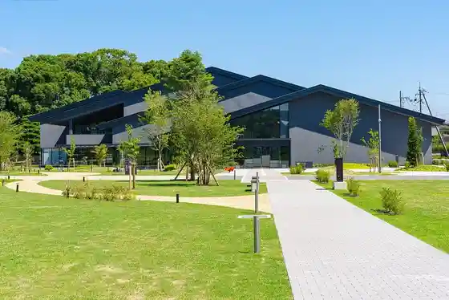
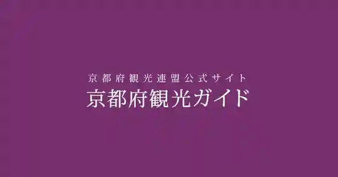
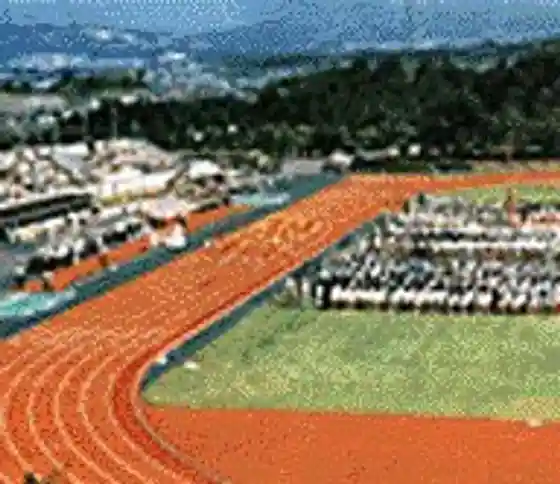

Uji Bunka Center
Uji, Kyoto · 0774-39-9333 · Official / source link
O Cha to Uji no Machi Rekishi Park “ Cha Zuna ”
Uji, Kyoto · 0774-24-2700 · Official / source link

Byodoin Omotesando
Uji, Kyoto · Official / source link

Byodoin
Uji, Kyoto · 0774-21-2861 · Official / source link

Kyotofuritsu Yamashiro Sogo Sports Park (Taiyogaoka)
Uji, Kyoto · 0774-24-1313 · Official / source link

Uji Ue Shrine
Uji, Kyoto · 0774-21-4634 · Official / source link
Tengase Dam
Uji, Kyoto · 0774-22-2188 · Official / source link
Naka Village Tokichi Main Shop
Uji, Kyoto · 0774-22-7800 · Official / source link
Uji Genjimonogatari Museum
Uji, Kyoto · 0774-39-9300 · Official / source link
Fukuju Sono Uji Cha Workshop
Uji, Kyoto · 050-3152-2930 · Official / source link
Uji Shokubutsu Park
Uji, Kyoto · 0774-39-9387 · Official / source link
Uji Ei Chashitsu Tsui Otori Iori
Uji, Kyoto · 0774-23-3334 · Official / source link
Tsuen Main Shop
Uji, Kyoto · 0774-21-2243 · Official / source link
Fukuju Sono Uji Chatei
Uji, Kyoto · 050-3152-2932 · Official / source link
Obaku Yamaman Fuku Tera
Uji, Kyoto · 0774-32-3900 · Official / source link
Uji Hashi
Uji, Kyoto · 0774-62-0714 · Official / source link
Kyotofuritsu Uji Park (to no Shima Tachibana Shima)
Uji, Kyoto · 0774-62-0325 · Official / source link
Uji Shrine
Uji, Kyoto · 0774-21-3041 · Official / source link
Uji Sado Ba (Takumi no Kan)
Uji, Kyoto · 0774-23-0888 · Official / source link
Mimuroto Tera
Uji, Kyoto · 0774-21-2067 · Official / source link
Hanaya Shiki Ukifune Sono
Uji, Kyoto · 0774-21-2126 · Official / source link
Marukyu Oyama Sono
Uji, Kyoto · 0774-20-0909 · Official / source link
Fucha Ryori Hakun Iori
Uji, Kyoto · 0774-32-0700 · Official / source link
Koeki Shadanhojin Uji Tourism Association
Uji, Kyoto · 0774-23-3353 · Official / source link
Ken Shrine
Uji, Kyoto · 0774-21-3014 · Official / source link
Uji Sogo Yagaikatsudo Center (Akutoparu Uji)
Uji, Kyoto · 075-575-3535 · Official / source link
Asahi Yaki Sakuto Kan
Uji, Kyoto · 0774-23-2517 · Official / source link
Ippan Zaidanhojin Seishonen Bunka Kenshu Dojo
Uji, Kyoto · 0774-32-1365 · Official / source link
Uji History Museum
Uji, Kyoto · 0774-39-9260 · Official / source link
JR Uji Ekimae Jidosha Chushajo
Uji, Kyoto · Official / source link
San Kyuan Uji Cha Shiryoshitsu
Uji, Kyoto · 0774-21-2636 · Official / source link
Hashi Tera (Hojo In)
Uji, Kyoto · 0774-21-2662 · Official / source link
Hozo In (Shuzo Ko)
Uji, Kyoto · 0774-31-8026 · Official / source link
Uji Kambayashi Memorial Museum
Uji, Kyoto · 0774-22-2509 · Official / source link